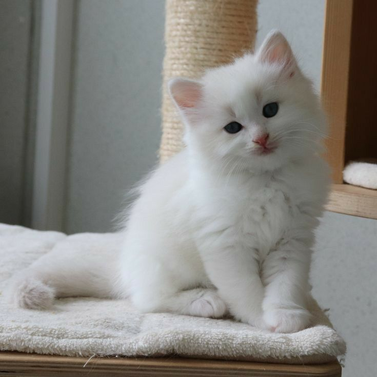

Котики — наши лучшие компаньоны и самые милые соседи одновременно.
Если вы вздремнете или разделите кусочек вашего сэндвича с тунцом с вашим питомцем, вы поймете, как вам повезло, что у вас такой завораживающий друг. Кошки обладают таинственным магнетизмом, проявляя привязанность через нежные толкания носом и топтания лапами. Свернувшись калачиком радом с вами, ваша кошка предлагает вам особую кошачью дружбу, которая никогда не будет скучной. Кошки манипулируют своими людьми мелодичным мяуканьем и сердечными поцелуями. Ничего более милого, чем это, просто не существует.
Почему они такие милые?
Ничто не может сравниться с мурлыкающей кошкой, когда ее ласкают. До сих пор не известно, почему кошки мурлыкают или почему некоторые кошки мурлычат больше, чем другие, но эти ритмические вибрации успокаивают ее человеческого коллегу. Волшебный мотор вашего питомца вызывает чувство покоя и обеспечивает приятную передышку от стремительного мира за дверью вашего дома.
